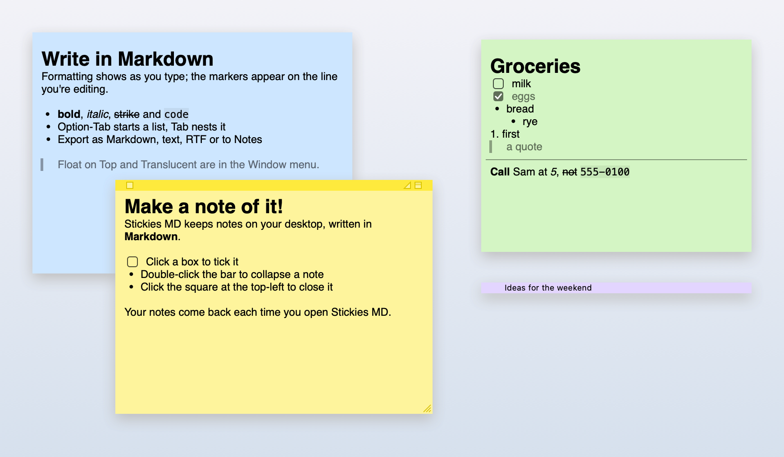

Stickies MD
Apple's Stickies, rebuilt natively for macOS, with notes written in Markdown.

What it does
- Stickies' notes: six colours, float on top, translucent, collapse, zoom, arrange
- Markdown, previewed as you type, with checkboxes you can click
- Find across notes; export to Markdown, text, RTF or Apple Notes
- Each note saved as a plain
.mdfile
What it doesn't
- Rich text: no text colours or per-word fonts
- Pictures or attachments
- Sync between Macs
The app isn't notarized, so macOS blocks the first open. On macOS 15 or later, click Done, then go to System Settings → Privacy & Security and click Open Anyway. On macOS 13 or 14, right-click the app and choose Open.